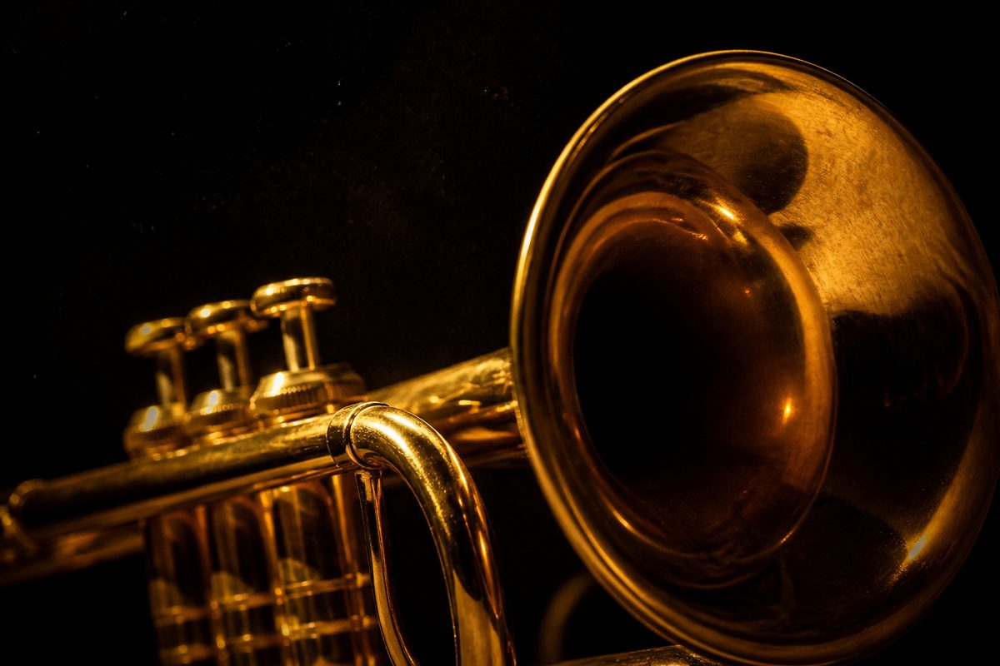

01
서울재즈빅밴드
Seoul Jazz Big Band
Big Band · 2007–
2007년 김남균이 창단해 이끌고 있는 전문 재즈 빅밴드. 18~22인조 편성으로 정통 재즈를 바탕에 두고 영화음악과 대중가요, 오페라를 재즈로 다시 쓰는 레퍼토리를 만들어 왔습니다. 자라섬국제재즈페스티벌에서 디디 브릿지워터와 협연했고, 최백호·최성수·유열·이정식·말로·호란·강산에 등과 무대를 함께했습니다.
Music Label · Production · Seoul
빅밴드의 브라스부터 현악 사중주까지.
소리를 설계하고, 무대와 음반으로 옮깁니다.
대표 김남균 — 음악감독 · 작곡 · 편곡 · 지휘
Since 2007 · Seoul Jazz Big Band
01 — Label
KN Sound는 작곡가이자 지휘자 김남균의 음악 레이블이자 프로덕션입니다. 2007년 서울재즈빅밴드를 창단한 이래 빅밴드 편곡과 자작곡, 현악 사중주와 피아노 솔로 음반, 청소년·시니어 앙상블의 운영까지 한 사람의 음악적 판단으로 이어 왔습니다.
편곡과 작곡, 음원 기획과 프로듀싱, 그리고 무대의 지휘까지. KN Sound는 곡이 만들어지는 첫 단계부터 관객이 듣는 마지막 순간까지를 한 흐름으로 다룹니다.

02 — What we do
빅밴드 편곡과 오케스트레이션, 현악 사중주와 피아노를 위한 자작곡. 영화음악과 대중가요, 오페라를 재즈의 언어로 다시 쓰는 작업을 해 왔습니다.
기획과 프로듀싱, 레코딩 디렉션. 정규 음반 두 장을 비롯한 음원 작업의 작곡·편곡·프로듀싱을 맡았습니다.
음악감독과 지휘자로 무대를 설계합니다. 축제와 클럽, 기업 행사, 협연 무대까지 규모에 맞춰 편성을 꾸립니다.
청소년과 시니어 빅밴드를 창단하고 운영해 온 경험으로, 단체의 소리와 훈련의 순서를 함께 만듭니다.
03 — Artists
Seoul Jazz Big Band
Big Band · 2007–
2007년 김남균이 창단해 이끌고 있는 전문 재즈 빅밴드. 18~22인조 편성으로 정통 재즈를 바탕에 두고 영화음악과 대중가요, 오페라를 재즈로 다시 쓰는 레퍼토리를 만들어 왔습니다. 자라섬국제재즈페스티벌에서 디디 브릿지워터와 협연했고, 최백호·최성수·유열·이정식·말로·호란·강산에 등과 무대를 함께했습니다.
Seoul Youth Big Band
Youth Ensemble · 2013–
2013년 창단한 청소년 빅밴드. 김남균이 단장 겸 음악감독으로 편곡과 지휘를 맡아, 학생 연주자들이 합주와 무대를 통해 재즈를 익혀 왔습니다.
Seoul Senior Big Band
Senior Ensemble
시니어 연주자들로 구성된 빅밴드. 오래 연주해 온 사람들이 한자리에 모여 합주하고 무대에 서는 편성입니다.
Won Ha-young
Piano
로맨틱 피아노 솔로. 정규 1집 《혼자 휴가를 보내던 때에》(2020)의 일곱 곡을 김남균이 작곡하고 프로듀싱했습니다. 조용한 시간의 장면들을 담은 피아노 음악입니다.
Echae String Quartet
String Quartet
두 대의 바이올린, 비올라, 첼로로 이루어진 현악 사중주단. 정규 1집 《팔레트 (Palette)》(2020)의 여덟 곡 전곡을 김남균이 작곡·편곡했고, 정승민·장수현·이정미·양해인이 연주했습니다.
04 — Upcoming
이제 막 자리를 잡아 가는 세 팀입니다. 준비되는 대로 이곳에 소식을 올립니다.
여덟 명의 연주로 빅밴드의 색을 압축한 편성.
브라스가 중심이 되는 무대를 위한 팀.
이름을 걸고 준비 중인 새 프로젝트.
06 — Contact
축제와 클럽, 기업 행사, 협연과 음원 제작까지. 규모와 일정을 알려 주시면 편성과 방향을 함께 정리해 회신드립니다.